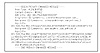

| Previous | Table of Contents | Next |
The Message Security Protocol (MSP) is the military equivalent of PEM. It was developed by the NSA in the late 1980s under the Secure Data Network System (SDNS) program. It is an X.400-compatible application-level protocol for securing electronic mail. MSP will be used for signing and encrypting messages in the Department of Defense’s planned Defense Message System (DMS) network.
The Preliminary Message Security Protocol (PMSP), to be used for “unclassified but sensitive” messages, is a version of MSP adapted for use with both X.400 and TCP/IP. This protocol is also called Mosaic.
Like PEM, MSP and PMSP software applications are flexible and designed to accommodate a variety of algorithms for security functions including signing, hashing, and encryption. PSMP will work with the Capstone chip (see Section 24.17).
Pretty Good Privacy (PGP) is a freeware electronic-mail security program, originally designed by Philip Zimmermann [1652]. It uses IDEA for data encryption, RSA (with keys up to 2047 bits) for key management and digital signatures, and MD5 as a one-way hash function.
PGP’s random public keys use a probabilistic primality tester, and get their initial seeds from measuring the user’s keyboard latency while typing. PGP generates random IDEA keys using the method delineated in ANSI X9.17, Appendix C (see Section 8.1) [55], with IDEA as the symmetric algorithm instead of DES. PGP also encrypts the user’s private key using a hashed pass phrase instead of a password.
PGP-encrypted messages have layered security. The only thing a cryptanalyst can learn about an encrypted message is who the recipient is, assuming he knows the recipient’s key ID. Only after the recipient decrypts the message does he learn who signed the message, if it is signed. Contrast this approach with PEM, which leaves quite a bit of information about the sender, recipient, and message in the unencrypted header.
The most interesting aspect of PGP is its distributed approach to key management (see Section 8.12). There are no key certification authorities; PGP instead supports a “web of trust.” Every user generates and distributes his own public key. Users sign each other’s public keys, creating an interconnected community of PGP users.
For example, Alice might physically give her public key to Bob. Bob knows Alice, so he signs her public key. He then gives the signed key back to her and keeps a copy for himself. When Alice wants to communicate with Carol, Alice sends Carol a copy of the key Bob signed. Carol, who already has Bob’s public key (she got it at some other time) and trusts Bob to certify other people’s keys, verifies his signature on Alice’s key and accepts it as valid. Bob has introduced Alice to Carol.
PGP does not specify a policy for establishing trust; users are free to decide who they trust and who they do not. PGP provides mechanisms for associating trust with public keys and for using trust. Each user keeps a collection of signed public keys in a file called a public-key ring. Each key in the ring has a key legitimacy field that indicates the degree to which the particular user trusts the validity of the key. The higher the trust level, the more the user believes the key is legitimate. A signature trust field measures how far the user trusts the signer to certify the public keys of other users. And finally, an owner trust field indicates the degree to which the particular user trusts the key’s owner to sign other public keys; this field is set manually by the user. PGP continuously updates these fields as users supply new information.
Figure 24.7 shows how this model might look for a particular user, Alice. Alice’s key is at the top, and the owner trust value is ultimate trust. Alice has signed Bob’s, Carol’s, Dave’s, Ellen’s, and Frank’s keys. She trusts Bob and Carol to sign other people’s public keys, and she partially trusts Dave and Ellen to sign other people’s public keys. And she trusts Gail to sign other people’s public keys, even though she has not signed Gail’s key herself.
Two partially trusted signatures may be sufficient to certify a key. Alice believes that Kurt’s key is legitimate because both Dave and Ellen have signed it. This is not automatic in PGP; Alice can set her own paranoia level.
Just because Alice believes a key to be valid, she does not have to trust it to sign other people’s keys. She does not trust Frank to sign other people’s public keys, even though she signed his key herself. And she does not trust Ivan’s signature on Martin’s key, or Kurt’s signature on Nancy’s key.
Owen’s key doesn’t fit into the web anywhere; perhaps Alice got it from a key server. PGP does not assume that the key is valid; Alice must either declare the key valid or decide to trust one of the key’s signers.
Of course, nothing prevents Alice from using keys she does not trust. PGP’s job is to alert Alice that the key is not trusted, not to prevent communications.
The weakest link of this whole system is key revocation: It is impossible to guarantee that no one will use a compromised key. If Alice’s private key is stolen she can send out something called a key revocation certificate, but since key distribution is ad hoc and largely word of mouth there is no guarantee that it will reach everyone who has her public key on his key ring. And as Alice has to sign the key revocation certificate with her private key; if she loses the key altogether she cannot revoke it.

Figure 24.7 PGP trust model.
The current version of PGP is 2.6.2. A new version of PGP, PGP 3.0, is scheduled for release by the end of 1995. Changes in 3.0 include options for triple-DES, SHA, and other public-key algorithms, a split of the encryption and signature public-key/private-key key pairs, enhanced procedures for key revocation, improved key-ring management functions, an API for integrating PGP in other programs, and a completely rewritten code base.
PGP is available for MS-DOS, UNIX, Macintosh, Amiga, and Atari. It is free for personal, noncommercial use, and is available from many ftp sites on the Internet. To ftp PGP from MIT, telnet to net-dist.mit.edu, log in as getpgp, answer the questions, then ftp to net-dist.mit.edu and change to the directory named in the telnet session. It is also available from ftp.ox.ac.uk, ftp.dsi.unimi.it, ftp.funet.fi, ftp.demon.co.uk, Compuserve, AOL, and elsewhere. For U.S. commercial users, PGP can be bought—complete with licenses—for about $100 from a company called ViaCrypt, 9033 N 24th Ave., Phoenix, AZ, 85021; (602) 944-0773; viacrypt@acm.org. Several shareware front-ends are available to help integrate PGP into MS-DOS, Microsoft Windows, Macintosh, and UNIX.
There are several books about PGP [601, 1394, 1495]. The source code has even been published in book form [1653] in an attempt to frustrate the U.S. Department of State, which continues to maintain that source code is exportable on paper but not electronically. Assuming you trust IDEA, PGP is the closest you’re likely to get to military-grade encryption.
A smart card is a plastic card, the size and shape of a credit card, with an embedded computer chip. It’s an old idea—the first patents were filed 20 years ago—but practical limitations made them feasible only five or so years ago. Since then they have taken off, mostly in Europe. Many countries use smart cards for pay telephones. There are also smart credit cards, smart cash cards, smart everything cards. The U.S. credit-card companies are looking at the technology, and within a few years even backwards Americans will have smart cards in their wallets.
A smart card contains a small computer (usually an 8-bit microprocessor), RAM (about a quarter kilobyte), ROM (about 6 or 8 kilobytes), and either EPROM or EEPROM (a few kilobytes). Future-generation smart cards will undoubtedly have more capacity, but some physical limitations on smart cards make expansion difficult. The card has its own operating system, programs, and data. (What it doesn’t have is power; that comes when the card is plugged in to a reader.) And it is secure. In a world where you might not trust someone else’s computer or telephone or whatever, you can still trust a card that you keep with you in your wallet.
| Previous | Table of Contents | Next |
){kind=link}
){kind=link}